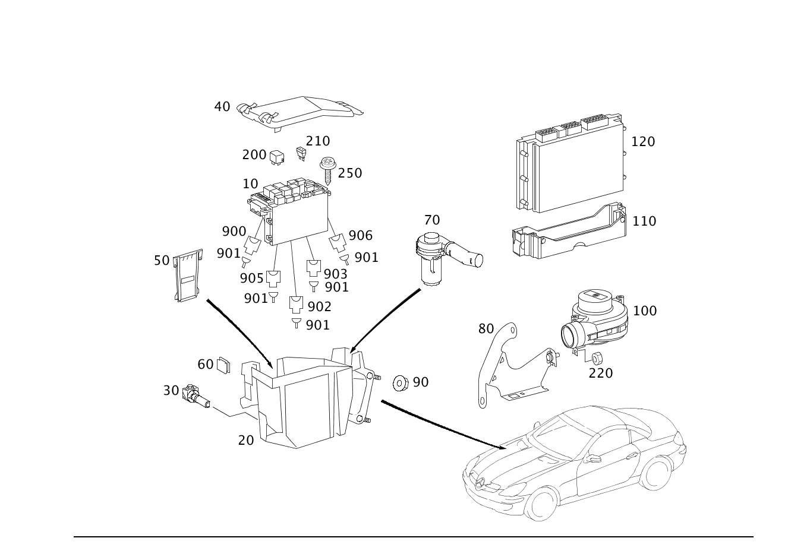

| № | Артикул | Название | Кол. | Примечание | Ограничение |
|---|---|---|---|---|---|
| 10 | A 171 545 00 01 | Базовый модуль блока реле | 1 | МОД.ОБР.СИГН. И УПР. С МОД.ПРЕДОХР.И РЕЛЕ СПЕРЕДИ SAM; SAM/SRB | |
| 10 | A 171 545 08 01 | Базовый модуль блока реле | 1 | МОД.ОБР.СИГН. И УПР. С МОД.ПРЕДОХР.И РЕЛЕ СПЕРЕДИ SAM; SAM/SRB | |
| 10 | A 171 545 11 01 | Базовый модуль блока реле (ZENTR.ELEKTRIK GRUNDMODUL) | 1 | МОД.ОБР.СИГН. И УПР. С МОД.ПРЕДОХР.И РЕЛЕ СПЕРЕДИ SAM; SAM/SRB | |
| 10 | A 171 545 15 01 | Базовый модуль блока реле | 1 | МОД.ОБР.СИГН. И УПР. С МОД.ПРЕДОХР.И РЕЛЕ СПЕРЕДИ SAM; SAM/SRB | |
| 10 | A 171 545 16 01 | Базовый модуль блока реле (ZENTR.ELEKTRIK GRUNDMODUL) | 1 | МОД.ОБР.СИГН. И УПР. С МОД.ПРЕДОХР.И РЕЛЕ СПЕРЕДИ SAM [697] ДЕТАЛЬ ПОСТАВЛЯЕТСЯ ТОЛЬКО/ИЛИ ТАКЖЕ КАК ЗАП.ЧАСТЬ | |
| 20 | A 171 540 00 24 | Приборный короб (GERAETEKASTEN) | 1 | СПЕРЕДИ СЛЕВА Рулевое управление: Влево [402] БОЛЬШЕ НЕ ПОСТАВЛЯЕТСЯ | -M113 |
| 20 | A 171 540 01 24 | Приборный короб (GERAETEKASTEN) | 1 | СПЕРЕДИ СЛЕВА Рулевое управление: Вправо [402] БОЛЬШЕ НЕ ПОСТАВЛЯЕТСЯ | -M113 |
| 30 | A 000 545 09 74 | - Опорный палец (LAGERBOLZEN) | 1 | КРЕПЛЕНИЕ ПРИБОРНОГО ОТСЕКА | |
| 40 | A 171 540 00 82 | Крышка (DECKEL) | 1 | ПРИБОРНЫЙ ОТСЕК Рулевое управление: Влево | -M113 |
| 40 | A 171 540 01 82 | Крышка (DECKEL) | 1 | ПРИБОРНЫЙ ОТСЕК Рулевое управление: Вправо [402] БОЛЬШЕ НЕ ПОСТАВЛЯЕТСЯ | -M113 |
| 50 | A 230 545 00 46 | Крышка (ABDECKUNG) | 1 | СБОКУ В ПРИБОРНОМ ОТСЕКЕ [402] БОЛЬШЕ НЕ ПОСТАВЛЯЕТСЯ | |
| 90 | A 000 990 43 37 | Шестигранная гайка (SECHSKANTMUTTER) | 4 | ПРИБОРНЫЙ ОТСЕК К МОТОРНОМУ ЩИТУ; M6 | |
| 200 | A 002 542 11 19 | Реле | 1 | ЗВУКОВЫЕ СИГНАЛЫ | |
| 200 | A 002 542 11 19 | Реле | 1 | КЛЕММА 87 FW/ХОДОВАЯ ЧАСТЬ | |
| 200 | A 002 542 14 19 | Реле | 2 | СТЕКЛООЧИСТИТЕЛЬ | |
| 200 | A 002 542 26 19 | Реле (RELAIS) | 1 | КЛЕММА 15R | |
| 200 | A 002 542 13 19 | Реле | 1 | НАСОС КП КОМФОРТ. ПЕРЕКЛЮЧ. (M) | |
| 200 | A 002 542 26 19 | Реле (RELAIS) | 1 | ВТОРИЧН. НАСОС | -M113 |
| 200 | A 002 542 13 19 | Реле | 1 | КЛЕММА 15 | |
| 200 | A 002 542 13 19 | Реле | 1 | ЦЕНТР.КОММУТ.БЛОК, ГНЕЗДО | |
| 200 | A 002 542 11 19 | Реле | 1 | Стартер | |
| 210 | N 072581 000303 | Плавкая вставка | 1 | ГНЕЗДО 16 РЕГУЛИР.ПОЯСНИЧ.ПОДПОРА; 7.5A [414] СТАРУЮ ДЕТАЛЬ УСТАНАВЛИВАТЬ БОЛЬШЕ НЕ РАЗРЕШАЕТСЯ | U22 |
| 210 | N 000000 004203 | Плавкая вставка (SICHERUNGSEINSATZ) | 1 | ГНЕЗДО 16 РЕГУЛИР.ПОЯСНИЧ.ПОДПОРА; C\-7.5 | U22 |
| 250 | A 001 984 59 29 | Болт с головкой торкс (SECHSRUNDSCHRAUBE) | 3 | КРЕПЛЕНИЕ БЛОКА ПРЕДОХРАН.; M4X20 | |
| 900 | A 003 545 13 01 | Закр. блок предохр. (SICHERUNGSDOSE) | 1 | БУ ОБОГРЕВА СИД. И ВЕНТИЛ.ПРОСТР.ГОЛОВЫ F34/24; COD. A SPT [402] БОЛЬШЕ НЕ ПОСТАВЛЯЕТСЯ | |
| 900 | A 037 545 26 28 | Штекер (STECKER) | 1 | МОДУЛЬ ПРЕДОХР. И РЕЛЕ ВОДИТ. N10/1 / 11; 2\-PIN MCP2.8 | |
| 900 | A 037 545 63 28 | Штекер (STECKER) | 1 | МОДУЛЬ ПРЕДОХР. И РЕЛЕ ВОДИТ. N10/1 / 25; 3\-PIN MQS | |
| 900 | A 003 545 13 01 | Закр. блок предохр. (SICHERUNGSDOSE) | 1 | БУ ОБОГРЕВА СИДЕН. F34/25; COD. A SPT [402] БОЛЬШЕ НЕ ПОСТАВЛЯЕТСЯ | |
| 900 | A 037 545 26 28 | Штекер (STECKER) | 1 | АУДИОМОДУЛЬ N10/1 / 11; 2\-PIN MCP2.8 | |
| 900 | A 003 545 13 01 | Закр. блок предохр. (SICHERUNGSDOSE) | 1 | БУ ОБОГРЕВА СИД.И ОБОГРЕВА РУЛ.КОЛЕСА F34/31; COD. A SPT [402] БОЛЬШЕ НЕ ПОСТАВЛЯЕТСЯ | |
| 900 | A 002 540 59 81 | Розетка (STECKDOSE) | 1 | БЛОК ПРЕДОХР. И РЕЛЕ ВОДИТ. N10/1/10; 10\-PIN MQS | |
| 900 | A 003 545 18 01 | Закр. блок предохр. (SICHERUNGSDOSE) | 1 | БУ ОБОГРЕВА СИД. И ВЕНТИЛ.ПРОСТР.ГОЛОВЫ F34/23; COD. B SPT | |
| 900 | A 037 545 31 28 | Штекер (STECKER) | 1 | МОДУЛЬ ПРЕДОХР. И РЕЛЕ ВОДИТ. N10/1/13; 4\-PIN MCP2.8 | |
| 900 | A 003 545 13 01 | Закр. блок предохр. (SICHERUNGSDOSE) | 1 | МОДУЛЬ ПРЕДОХР. И РЕЛЕ ЗАДН. N10/2 / S19; COD. A SPT [402] БОЛЬШЕ НЕ ПОСТАВЛЯЕТСЯ | |
| 900 | A 163 545 35 28 | Штекер (STECKER) | 1 | БУ РЕГУЛИР. СИДЕН. F34/34; SPT [402] БОЛЬШЕ НЕ ПОСТАВЛЯЕТСЯ | |
| 900 | A 037 545 36 28 | Сцепление, механическое (KUPPLUNG, MECHANISCH) | 1 | МОДУЛЬ ПРЕДОХР. И РЕЛЕ ВОДИТ. N10/1/9; 6\-PIN MCP2.8 | |
| 900 | A 003 545 13 01 | Закр. блок предохр. (SICHERUNGSDOSE) | 1 | БУ РЕГУЛИР. СИДЕНЬЯ, СТОРОНА ПЕРЕДН. ПАСС. F34/35; COD. A SPT [402] БОЛЬШЕ НЕ ПОСТАВЛЯЕТСЯ | |
| 900 | A 037 545 35 28 | Сцепление, механическое (KUPPLUNG, MECHANISCH) | 1 | МОДУЛЬ ПРЕДОХР. И РЕЛЕ ВОДИТ. N10/1/14; 6\-PIN MCP2.8 | |
| 900 | A 037 545 61 28 | Штекер (STECKER) | 1 | МОДУЛЬ ПРЕДОХР. И РЕЛЕ ВОДИТ. N10/1/22; 2\-PIN MQS | |
| 900 | A 002 540 86 81 | Корпус штекера (STECKERGEHAEUSE) | 1 | МОДУЛЬ ПРЕДОХР. И РЕЛЕ ВОДИТ. N10/1/20; 14\-PIN MQS | |
| 900 | A 037 545 55 28 | Штекер (STECKER) | 1 | МОДУЛЬ ПРЕДОХР. И РЕЛЕ ВОДИТ. N10/1/2/19; 8\-PIN SLK2.8 | |
| 900 | A 037 545 32 28 | Сцепление, механическое (KUPPLUNG, MECHANISCH) | 1 | МОДУЛЬ ПРЕДОХР. И РЕЛЕ ВОДИТ. N10/1/12; 4\-PIN MCP 2.8 | |
| 900 | A 037 545 37 28 | Штекер (STECKER) | 1 | МОДУЛЬ ПРЕДОХР. И РЕЛЕ ВОДИТ. N10/1,CODE D; 6\-PIN MCP2.8 | |
| 900 | A 037 545 86 28 | Штекер (STECKER) | 1 | МОДУЛЬ ПРЕДОХР. И РЕЛЕ ВОДИТ. N10/1, CODE B; 4\-PIN MCP2.8 | |
| 900 | A 037 545 39 28 | Штекер (STECKER) | 1 | МОДУЛЬ ПРЕДОХР. И РЕЛЕ ВОДИТ. N10/1 ,CODE A; 10\-PIN SLK 2.8 | |
| 901 | A 011 545 84 26 | Контактная пружина (FEDERSTECKER) | NB | 0.5\-1.0 MM2 SPT | |
| 901 | A 013 545 76 26 | Контактная втулка (KONTAKTBUCHSE) | NB | 0.5\-1.0 MM2 MCP2.8 | |
| 901 | A 016 545 41 26 | Контактная втулка (KONTAKTBUCHSE) | NB | 0.25\-0.35 MM2 MQS | |
| 901 | A 000 540 47 15 | Контактная втулка (KONTAKTBUCHSE) | NB | 1.5\-2.5 MM2 MCP2.8 | |
| 901 | A 000 540 46 05 | Электрический провод (ELEKTRISCHE LEITUNG) | NB | 0.75 MM2 MQS SN [T774] СОЕДИНИТЕЛИ СЛЕДУЕТ ЗАКАЗЫВАТЬ В СООТВЕТСТВИИ С ОБЩИМ ПОПЕРЕЧНЫМ СЕЧЕНИЕМ СОЕДИНЯЕМЫХ ПРОВОДОВРУКОВОДСТВО ПО РЕМОНТУ СМ. WIS. ================================================================================================= SOLDER CONNECTOR SLEEVES: TOTAL WIRE CROSS-SECTION: A 001 546 99 41 GREEN 0.7 - 2.4 MM2 A 002 546 00 41 RED 2.0 - 4.0 MM2 A 002 546 01 41 BLUE 3.5 - 8.0 MM2 A 002 546 11 41 YELLOW 7.5 - 12.0 MM2 BUTT JOINT: A 002 546 13 41 0.5 MM2 A 002 546 14 41 0.8 MM2 A 002 546 15 41 1.3 MM2 A 002 546 16 41 2.0 MM2 =================================================================================================== | |
| 901 | A 009 545 25 26 | Контактная втулка (KONTAKTBUCHSE) | NB | 6.0\-10.0 MM2 LSK8 | |
| 901 | A 013 545 15 26 | Контактная втулка (KONTAKTBUCHSE) | NB | 0.5\-0.75 MM2 SLK2.8 | |
| 901 | A 000 540 40 05 | Электрический провод (ELEKTRISCHE LEITUNG) | NB | 2.5 MM2 SLK2.8 [T774] СОЕДИНИТЕЛИ СЛЕДУЕТ ЗАКАЗЫВАТЬ В СООТВЕТСТВИИ С ОБЩИМ ПОПЕРЕЧНЫМ СЕЧЕНИЕМ СОЕДИНЯЕМЫХ ПРОВОДОВРУКОВОДСТВО ПО РЕМОНТУ СМ. WIS. ================================================================================================= SOLDER CONNECTOR SLEEVES: TOTAL WIRE CROSS-SECTION: A 001 546 99 41 GREEN 0.7 - 2.4 MM2 A 002 546 00 41 RED 2.0 - 4.0 MM2 A 002 546 01 41 BLUE 3.5 - 8.0 MM2 A 002 546 11 41 YELLOW 7.5 - 12.0 MM2 BUTT JOINT: A 002 546 13 41 0.5 MM2 A 002 546 14 41 0.8 MM2 A 002 546 15 41 1.3 MM2 A 002 546 16 41 2.0 MM2 =================================================================================================== | |
| 901 | A 000 540 41 05 | Электрический провод (ELEKTRISCHE LEITUNG) | NB | 4.0 MM2 SLK2.8 [T774] СОЕДИНИТЕЛИ СЛЕДУЕТ ЗАКАЗЫВАТЬ В СООТВЕТСТВИИ С ОБЩИМ ПОПЕРЕЧНЫМ СЕЧЕНИЕМ СОЕДИНЯЕМЫХ ПРОВОДОВРУКОВОДСТВО ПО РЕМОНТУ СМ. WIS. ================================================================================================= SOLDER CONNECTOR SLEEVES: TOTAL WIRE CROSS-SECTION: A 001 546 99 41 GREEN 0.7 - 2.4 MM2 A 002 546 00 41 RED 2.0 - 4.0 MM2 A 002 546 01 41 BLUE 3.5 - 8.0 MM2 A 002 546 11 41 YELLOW 7.5 - 12.0 MM2 BUTT JOINT: A 002 546 13 41 0.5 MM2 A 002 546 14 41 0.8 MM2 A 002 546 15 41 1.3 MM2 A 002 546 16 41 2.0 MM2 =================================================================================================== | |
| 901 | A 004 545 00 26 | Контактная втулка (KONTAKTBUCHSE) | NB | 2.5\-4.0 MM2 SPT | |
| 901 | A 000 540 57 05 | Электрический жгут (ELEKTRISCHER LEITUNGSSATZ) | NB | 4.0 MM2 LSK8 AG [T774] СОЕДИНИТЕЛИ СЛЕДУЕТ ЗАКАЗЫВАТЬ В СООТВЕТСТВИИ С ОБЩИМ ПОПЕРЕЧНЫМ СЕЧЕНИЕМ СОЕДИНЯЕМЫХ ПРОВОДОВРУКОВОДСТВО ПО РЕМОНТУ СМ. WIS. ================================================================================================= SOLDER CONNECTOR SLEEVES: TOTAL WIRE CROSS-SECTION: A 001 546 99 41 GREEN 0.7 - 2.4 MM2 A 002 546 00 41 RED 2.0 - 4.0 MM2 A 002 546 01 41 BLUE 3.5 - 8.0 MM2 A 002 546 11 41 YELLOW 7.5 - 12.0 MM2 BUTT JOINT: A 002 546 13 41 0.5 MM2 A 002 546 14 41 0.8 MM2 A 002 546 15 41 1.3 MM2 A 002 546 16 41 2.0 MM2 =================================================================================================== | |
| 901 | A 011 545 81 26 | Контактная пружина (FEDERSTECKER) | NB | МОДУЛЬ ПРЕДОХР. И РЕЛЕ ВОДИТ. N10/1; 0.5\-1.0 MM2 JPT | |
| 901 | A 013 545 15 26 | Контактная втулка (KONTAKTBUCHSE) | NB | МОДУЛЬ ПРЕДОХР. И РЕЛЕ ВОДИТ. N10/1; 0.5\-0.75 MM2 SLK2.8 | |
| 902 | A 037 545 63 28 | Штекер (STECKER) | 1 | МОДУЛЬ ПРЕДОХР. И РЕЛЕ ВОДИТ. N10/1 /25; 3\-PIN MQS | |
| 902 | A 037 545 67 28 | Сцепление, механическое (KUPPLUNG, MECHANISCH) | 1 | МОДУЛЬ ПРЕДОХР. И РЕЛЕ ВОДИТ. N10/1 / 15; 7\-PIN MQS/MCP2.8 | |
| 902 | A 037 545 60 28 | Штекер (STECKER) | 1 | МОДУЛЬ ПРЕДОХР. И РЕЛЕ ВОДИТ. N10/1 /18; 2\-PIN MQS | |
| 902 | A 037 545 94 28 | Штекер (STECKER) | 1 | МОДУЛЬ ПРЕДОХР. И РЕЛЕ ВОДИТ. N10/1 /16; 6\-PIN SLK2.8 | |
| 903 | A 038 545 14 28 | Сцепление, механическое | 1 | МОДУЛЬ ПРЕДОХР. И РЕЛЕ ВОДИТ. N10/1 /1; 3\-PIN | |
| 903 | A 168 545 01 28 | Сцепление, механическое (KUPPLUNG, MECHANISCH) | 1 | МОДУЛЬ ПРЕДОХР. И РЕЛЕ ВОДИТ. N10/1 /4; 1\-PIN SLK8 | |
| 903 | A 037 545 27 28 | Сцепление, механическое (KUPPLUNG, MECHANISCH) | 1 | МОДУЛЬ ПРЕДОХР. И РЕЛЕ ВОДИТ. N10/1 /21; 2\-PIN MCP2.8 | |
| 903 | A 037 545 69 28 | Сцепление, механическое (KUPPLUNG, MECHANISCH) | 1 | МОДУЛЬ ПРЕДОХР. И РЕЛЕ ВОДИТ. N10/1 /8; 2\-PIN LSK8 | |
| 903 | A 210 545 40 28 | Сцепление, механическое (KUPPLUNG, MECHANISCH) | 1 | МОДУЛЬ ПРЕДОХР. И РЕЛЕ ВОДИТ. N10/1; 1\-PIN JPT | |
| 905 | A 038 545 49 28 | Сцепление, механическое (KUPPLUNG, MECHANISCH) | 1 | МОДУЛЬ ПРЕДОХР. И РЕЛЕ ВОДИТ. N10/1 /24; 3\-PIN MCP2.8 [402] БОЛЬШЕ НЕ ПОСТАВЛЯЕТСЯ | |
| 905 | A 037 545 57 28 | Штекер (STECKER) | 1 | МОДУЛЬ ПРЕДОХР. И РЕЛЕ ВОДИТ. N10/1 /21; 12\-PIN SLK2.8 | |
| 905 | A 037 545 35 28 | Сцепление, механическое (KUPPLUNG, MECHANISCH) | 1 | МОДУЛЬ ПРЕДОХР. И РЕЛЕ ВОДИТ. N10/1 / 5; 6\-PIN MCP2.8 | |
| 905 | A 037 545 40 28 | Сцепление, механическое (KUPPLUNG, MECHANISCH) | 1 | МОДУЛЬ ПРЕДОХР. И РЕЛЕ ВОДИТ. N10/1 /3; 10\-PIN SLK2.8 | |
| 906 | A 001 545 49 40 | Корпус штекера (STECKERGEHAEUSE) | 1 | МОДУЛЬ ПРЕДОХР. И РЕЛЕ ВОДИТ. N10/1 6; 28\-PIN MQS | |
| 906 | A 037 545 39 28 | Штекер (STECKER) | 1 | МОДУЛЬ ПРЕДОХР. И РЕЛЕ ВОДИТ. N10/2 /7; 10\-PIN SLK 2.8 |
Позиций: 73 · подписано на схемах: 73 · колесо — плавный зум в курсор, перетаскивание — пан, двойной клик — зум, клик по артикулу — скопировать · наведите на строку или цифру на схеме — подсветка связки, клик — закрепить.